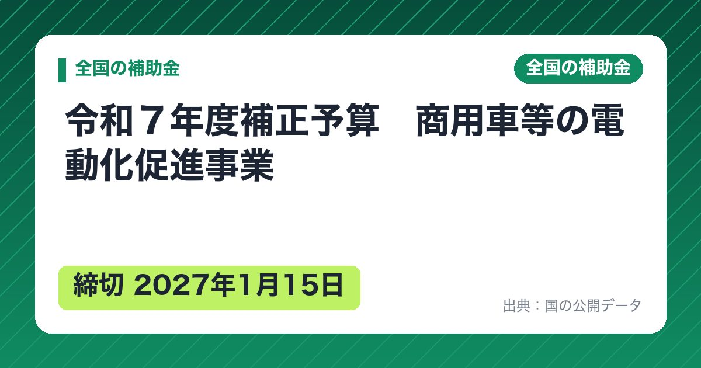

令和７年度補正予算 商用車等の電動化促進事業

締切 2027年1月15日｜上限 175億円
商用車（トラック）と充電設備の補助です
概要
| 対象地域 | 全国 |
|---|---|
| 補助上限額 | 175億円 |
| 補助率 | 公募要領を参照 |
| 受付期間 | 2026年4月24日 〜 2027年1月15日 |
| 対象の従業員数 | 従業員数の制約なし |
| 利用目的 | エコ・SDGs活動支援がほしい |
| 対象業種 | 漁業 / 建設業 / 製造業 / 電気・ガス・熱供給・水道業 / 情報通信業 / 複合サービス事業 / サービス業（他に分類されないもの） / 公務（他に分類されるものを除く） / 分類不能の産業 / 農業、林業 / 鉱業、採石業、砂利採取業 / 運輸業、郵便業 / 卸売業、小売業 / 金融業、保険業 / 不動産業、物品賃貸業 / 学術研究、専門・技術サービス業 / 宿泊業、飲食サービス業 / 生活関連サービス業、娯楽業 / 教育、学習支援業 / 医療、福祉 |
| 実施機関 | 脱炭素成長型経済構造移行推進対策費補助金 |
公募の内容（原文の抜粋）
一般財団法人環境優良車普及機構（以下「機構」という。）では、環境省から令和７年度補正予算脱炭素成長型経済構造移行推進対策費補助金（商用車等の電動化促進事業（トラック））の交付決定を受け、機構が管理・運用する補助金を活用して、普及初期のトラック（バンを含む。）の電動化及び充電設備等の導入加速を支援し反復・継続した走行に伴うCO2排出削減につなげ、もって価格の低減による産業競争力強化・経済成長と脱炭素社会の構築を推進することを目的として商用車等の電動化促進事業を実施することとしています。
本補助金の概要、対象事業、申請方法及びその他の留意事項は、本公募要領に記載するとおりですので、申請される方は、公募要領（R7kouboyouryou.pdf）を熟読のうえ、令和７年度補正予算脱炭素成長型経済構造移行推進対策費補助金（商用車等の電動化促進事業（トラック））交付規程（令和８年４月２２日環補電ホ第8-007号。以下「交付規程」という。）（R7koufukitei.pdf）に従って手続きを行っていただくようお願いいたします。
補助事業を申請される皆様へ
本補助金については、国庫補助金である公的資金を財源としておりますので、社会的にその適正な執行が強く求められており、当然ながら、機構としましても補助金に係る不正行為に対しては厳正に対処します。
従って、本補助金を申請される方、申請後、補助金の交付決定を受けられる方におかれましては、以下の点につきまして、十分ご認識されたうえで、申請を行っていただきますようお願いします。
１. 申請者が機構に提出する書類には、いかなる理由があっても虚偽の記述を行わないでください。
２. 補助金で取得し、又は効用の増加した財産（取得財産等）を、当該財産の処分制限期間（法定耐用年数）内に処分（補助金の交付目的に反して使用し、譲渡し、交換し、貸し付け、担保に供し、又は廃棄すること等をいう。）しようとするときは、事前に処分内容等について機構の承認を受けなければなりません（ただし、申請時において、処分制限期間内に使用者の変更が予定されており、計画が示される場合は財産処分の対象とはならない場合があります。事前に機構にご相談ください）。
なお、機構は、必要に応じて取得財産等の管理状況等について調査することがあります。また、処分制限期間内に処分をした場合は、交付した補助金の一部を返還していただくことになります。
３. 補助事業の適正かつ円滑な実施のため、その実施中又は完了後に必要に応じて現地調査等を実施します。また、不具合の発生時には、速やかにその内容について、機構に報告する必要があります。
４. 補助事業に関し不正行為が認められたときは、当該補助金に係る交付決定の取消を行うとともに、支払い済の補助金のうち取消対象となった額に加算金（年10.95％の利率）を加えた額を返還していただくことになります。
なお、補助金に係る不正行為に対しては、補助金等に係る予算の執行の適正化に関する法律（昭和30年法律第179号。以下「適正化法」という。）第29条から第32条までにおいて、刑事罰等を科す旨規定されています。
５. 本事業により導入される電気自動車等の充放電に必要な充電設備等（以下「充電設備等」という。）について、機構から補助金の交付決定を通知する前に発注等を行った経費は、補助金の交付対象とはなりません。
６. 車両又は充電設備等を申請する際、安全面及び法規面については申請者が十分に確認し、申請者の責任の下に導入・設置してください。機構は、本補助金の交付対象として申請された車両又は充電設備等について、本補助金の要件を満たしているか否かは審査しますが、安全面や法規面については何ら保証するものではありません。
７. 充電設備等の設置に関し、申請者は設置する土地の使用権限を有していることを十分に確認し申請者の責任の下に設置してください。
８. 補助事業に係る資料等は、事業の完了の日の属する年度の終了後５年間（充電設備等を導入した場合は６年間）、保存していただく必要があります。
本補助金についての申請方法については、以下の種類があります。それぞれ申請に対する条件がありますので、申請の際にはよく注意してください。
・単年度申請(購入前)：補助対象車両、充電設備等を購入する前に行う申請。申請受付は受付期間内（単年度）を原則とします。
・単年度申請(購入後)：補助対象車両を購入後に行う申請。充電設備等については、認められません。
・複数年度申請：補助対象車両の導入と充電設備等の設置を別の年度に行う場合の申請方法です。補助金の交付は単年度ごとに行うこととなるため、各年度、補助金の交付申請を行い、交付決定を受ける必要があります。２ヶ年度目の補助事業は、政府において所要の予算措置が講じられた場合にのみ行いうるものです。この申請を行う場合は、余裕を持って必ず事前に機構に相談を行って下さい。
・国庫債務負担行為を活用した申請：①又は②を導入する場合であって、単年度で事業を行うことが困難なときには、本制度を利用することで、当年度内に事業が終了せず翌年度に終了する場合であっても申請可能となります。この場合、補助金の支払いは令和９年度に行われます。この申請を行う場合は、余裕を持って必ず事前に機構に相談を行って下さい。
① 令和９年４月１日（木）から１２月１７日（金）までに新車新規登録（軽自動車については、新車新規検査）される車両（地方公共団体又は公営企業体が使用するもの、燃料電池自動車、水素内燃機関型自動車、塵芥車、冷凍・冷蔵架装車その他契約から納車までに長期間を要する車両に限る。）
② ①と一体的に導入される充電設備等
１．補助金の目的と性格
(１) この補助金は、貨物自動車運送事業者等が電気自動車（ＢＥＶ）（バッテリー交換式電気自動車を含む。以下同じ。）、プラグインハイブリッド自動車（ＰＨＥＶ）、燃料電池自動車（ＦＣＶ）、水素内燃機関型自…
申請前の準備
- GビズIDプライム（電子申請に必須・無料・発行まで1〜2週間かかることあり）：gbiz-id.go.jp
- 直近の決算書（個人事業主は確定申告書の控え）
- 事業計画（何に使い、どう売上・生産性が上がるか）
- 見積書（買う物・頼む工事の）
ほとんどの補助金は、申請時に直近の決算書（個人は確定申告書）が必要で、交付後も経費の帳簿が求められます。
広告準備に使えるサービス：
・無料の会計自動化ソフト マネーフォワード クラウド会計  （法人の帳簿・決算書づくりを自動化）
（法人の帳簿・決算書づくりを自動化）
・やよいの青色申告オンライン  （個人事業主の青色申告に）
（個人事業主の青色申告に）
全国のほかの補助金
- 「太陽光発電導入拡大等技術開発事業」の第3回公募（締切 2026年11月25日）
- 【農林水産省】中山間地域所得確保推進事業（締切 2026年11月25日）
- 「ポスト5G情報通信システム基盤強化研究開発事業（社会課題解決に向けた量子コンピュータ次世代機開発・実証の加速）」（g12-2：部素材）の追加公募（締切 2026年11月26日）
- 【事前着手】令和8年度排出削減が困難な産業におけるエネルギー・製造プロセス転換支援事業（二次公募）（事業Ⅱ/紙パルプ・化学・セメント）（締切 2026年11月27日）
- 令和8年度排出削減が困難な産業におけるエネルギー・製造プロセス転換支援事業（二次公募）（事業Ⅱ/紙パルプ・化学・セメント）（締切 2026年11月27日）
- 令和７年度補正 ディマンドリスポンスの拡大に向けたIoT化推進事業（締切 2026年11月27日）
- 【令和８年度】二酸化炭素排出抑制対策事業費等補助金（地域再エネ水素ステーション保守点検等支援事業）（締切 2026年11月28日）
- 令和８年度二酸化炭素排出抑制対策事業費等補助金（運輸部門等の脱炭素化に向けた先進的システム社会実装促進事業のうち、農業機械の電動化促進事業）（締切 2026年11月30日）